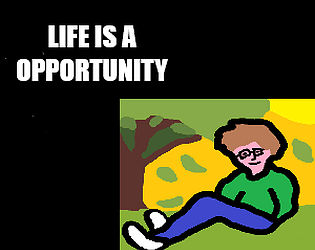

Life Is An Opportunity
Role: Programmer and Designer (solo project)
Tech: GML, GameMaker, GitHub
Life is an opportunity is a 2D RPG Adventure Game where the game centers around a group of misfits who all had troubled backgrounds.
As programmer and designer of this game, I made a short GameJam project for Jamsepticeye this was quite an ambitious project given that I haven't much time to plan. This made use of a lot of YouTube tutorials and ideas made on the fly. This project had little planning and was mostly idea driven.
During development, I made sure to pay close attention to the GameMaker Tutorials on YouTube as they seemed to be the best resource to understand this programming language that I was unfamiliar with. I found this project more difficult than Unity as there were aspects I had to understand that I was not prepared for.
Since I was the only developer/designer I chose not to do any planning and just tried to get as much content as I could done in time to submit before the deadline. If anything, this allowed me to understand what I could have done differently given the short Roadmap of development I had to develop this in.
As programmer and designer of this game, I made a short GameJam project for Jamsepticeye this was quite an ambitious project given that I haven't much time to plan. This made use of a lot of YouTube tutorials and ideas made on the fly. This project had little planning and was mostly idea driven.
During development, I made sure to pay close attention to the GameMaker Tutorials on YouTube as they seemed to be the best resource to understand this programming language that I was unfamiliar with. I found this project more difficult than Unity as there were aspects I had to understand that I was not prepared for.
Since I was the only developer/designer I chose not to do any planning and just tried to get as much content as I could done in time to submit before the deadline. If anything, this allowed me to understand what I could have done differently given the short Roadmap of development I had to develop this in.
